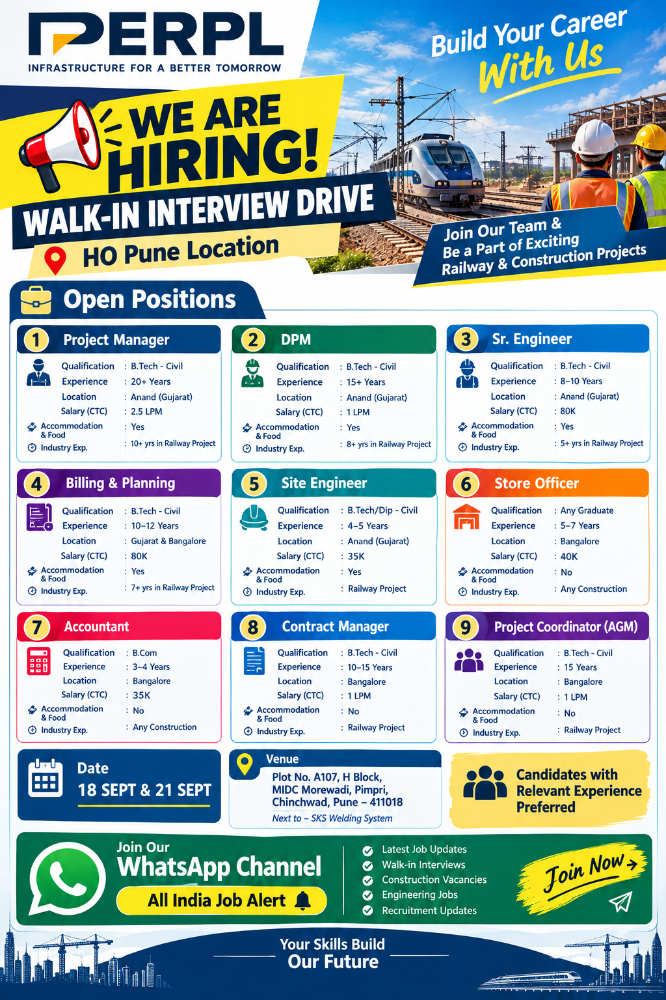

Experienced Civil Engineering & Construction Professionals Wanted

PERPL is inviting applications from experienced and skilled professionals for multiple career opportunities across Railway and Construction Projects. These openings are suitable for candidates who have strong experience in civil engineering, railway infrastructure, project execution, planning, quantity surveying, billing, contracts, stores and project coordination.
The current recruitment drive includes senior management as well as engineering and support positions. Candidates with relevant railway project experience will be preferred for several technical and management positions. The vacancies are available in Anand, Gujarat and Bangalore, depending on the position. Candidates who are looking for long-term career opportunities in railway construction and infrastructure projects can consider these openings.
PERPL is looking for professionals who can contribute to project execution, planning, quality, commercial activities, site management, contract administration and overall project coordination. Applicants should carefully check the required qualification, experience, job location and industry experience before submitting their updated resume.
Qualification: B.Tech – Civil Engineering
Minimum Experience: 20+ Years
Location: Anand, Gujarat
Salary: ₹2.5 LPM CTC
Accommodation & Food: Yes
Industry Experience: Minimum 10 years of experience in Railway Projects.
The Project Manager will be responsible for overall project execution, coordination, planning, site management, team supervision and timely completion of railway infrastructure activities. Candidates should have extensive leadership experience and strong knowledge of railway project execution.
Qualification: B.Tech – Civil Engineering
Minimum Experience: 15+ Years
Location: Anand, Gujarat
Salary: ₹1 LPM CTC
Accommodation & Food: Yes
Industry Experience: Minimum 8 years in Railway Projects.
The DPM position is suitable for experienced civil engineering professionals who can support project management, site execution, contractor coordination, progress monitoring and project planning activities.
Qualification: B.Tech – Civil Engineering
Experience: 8–10 Years
Location: Anand, Gujarat
Salary: ₹80,000 CTC
Accommodation & Food: Yes
Industry Experience: Minimum 5 years in Railway Projects.
The Senior Engineer role requires practical experience in civil construction and railway infrastructure. The selected candidate may be involved in site supervision, execution, quality coordination, measurements, technical documentation and progress reporting.
Qualification: B.Tech – Civil Engineering
Experience: 10–12 Years
Location: Gujarat & Bangalore
Salary: ₹80,000 CTC
Accommodation & Food: Yes
Industry Experience: Minimum 7 years in Railway Projects.
This position is suitable for professionals experienced in project planning, billing, quantity measurement, project scheduling, contractor bills and progress monitoring. Railway project experience is an important requirement for this role.
Qualification: B.Tech / Diploma – Civil Engineering
Experience: 4–5 Years
Location: Anand, Gujarat
Salary: ₹35,000 CTC
Accommodation & Food: Yes
Industry Experience: Railway Project experience required.
The Site Engineer will support day-to-day site execution and coordinate with supervisors, contractors and project teams. Candidates should understand civil construction activities, drawings, measurements, site documentation and safety procedures.
Qualification: Any Graduate
Experience: 5–7 Years
Location: Bangalore
Salary: ₹40,000 CTC
Accommodation & Food: No
Industry Experience: Any Construction Industry.
The Store Officer will be responsible for construction material management, stock records, material receiving and issuing, inventory control and store documentation. Candidates with construction site store experience will be preferred.
Qualification: B.Com
Experience: 3–4 Years
Location: Bangalore
Salary: ₹35,000 CTC
Accommodation & Food: No
Industry Experience: Any Construction Industry.
The Accountant position is suitable for B.Com graduates with construction industry experience. Responsibilities may include accounting documentation, billing support, records, financial entries and coordination with project administration teams.
Qualification: B.Tech – Civil Engineering
Experience: 10–15 Years
Location: Bangalore
Salary: ₹1 LPM CTC
Accommodation & Food: No
Industry Experience: Railway Project experience required.
The Contract Manager will handle contract-related activities, coordination, documentation, commercial matters and project contract administration. Candidates with railway infrastructure and construction contract experience will be preferred.
Qualification: B.Tech – Civil Engineering
Experience: 15 Years
Location: Bangalore
Salary: ₹1 LPM CTC
Accommodation & Food: No
Industry Experience: Railway Project experience required.
The Project Coordinator / AGM role is intended for highly experienced civil engineering professionals who can coordinate project activities, teams, documentation, planning, execution and management-level communication.
Railway infrastructure projects require professionals who understand large-scale civil construction, site coordination, project schedules, contractor management, quality requirements and strict execution timelines. For senior positions in this recruitment drive, PERPL has specifically mentioned railway project experience as an important requirement.
Candidates applying for Project Manager, DPM, Senior Engineer, Billing & Planning, Contract Manager and Project Coordinator positions should therefore highlight their railway project experience clearly in their resume. Mentioning project type, years of experience, designation, responsibilities and major work handled can help recruiters understand the candidate's profile more quickly.
The salary mentioned in this recruitment information varies according to the position and experience level. Senior management positions offer salaries up to ₹2.5 lakh per month CTC, while other engineering, commercial and support positions offer different salary packages. Accommodation and food are provided for selected positions as mentioned above. Candidates should confirm the final salary structure and benefits with the recruiter during the recruitment process.
The current vacancies are available mainly in Anand, Gujarat and Bangalore. Project Manager, DPM, Senior Engineer and Site Engineer positions are based in Anand, Gujarat. Billing & Planning opportunities are available in Gujarat and Bangalore. Store Officer, Accountant, Contract Manager and Project Coordinator positions are based in Bangalore.
Candidates should be prepared to work at the assigned project location according to the requirements of the organization. Before joining, applicants should confirm the exact project location, reporting details, joining date, salary structure, accommodation arrangements and other employment conditions directly with the recruitment team.
Interested and eligible candidates can apply by sending their updated resume/CV to the recruitment email address given below.
📧 Email: hrjobs@perpl.in
📱 Contact: 8279721838
Candidates should mention the position applied for, total years of experience, current location and relevant Railway Project experience in their resume or email. Senior candidates should clearly mention their major railway and infrastructure projects handled.
Recruitment communication may be provided after the resume is reviewed. As stated in the recruitment information, candidates should be patient and wait for the recruiter to contact them if their CV is shortlisted.
Candidates should avoid sending an incomplete resume. Make sure your CV contains your correct mobile number, email address, current location, educational qualification, total experience and detailed project experience. Candidates applying for railway positions should clearly mention railway project names and the nature of work handled.
Before accepting an offer, candidates should independently confirm the employer, project, salary, accommodation, food, joining conditions and other employment terms. Never pay money to anyone for a job application, interview or selection unless the employer officially confirms a legitimate fee.
Get regular updates about private jobs, construction jobs, engineering vacancies, walk-in interviews and other recruitment opportunities.
Join All India Job Alert on WhatsAppPERPL's current recruitment drive provides opportunities for experienced professionals in railway infrastructure, civil engineering and construction management. With openings ranging from Project Manager and DPM to Site Engineer, Store Officer and Accountant, candidates from different professional backgrounds can check the positions according to their qualifications and experience.
The highest package listed is ₹2.5 LPM CTC for the Project Manager position, with accommodation and food provided. Other senior roles also offer competitive packages along with project-based opportunities. Candidates with strong Railway Project experience should give special attention to the Project Manager, DPM, Senior Engineer, Billing & Planning, Contract Manager and Project Coordinator positions.
Interested candidates are advised to prepare an updated and professional CV and send it to the official recruitment email mentioned above. Candidates should provide accurate information about their experience and wait for the recruitment team to contact them if their profile is shortlisted.